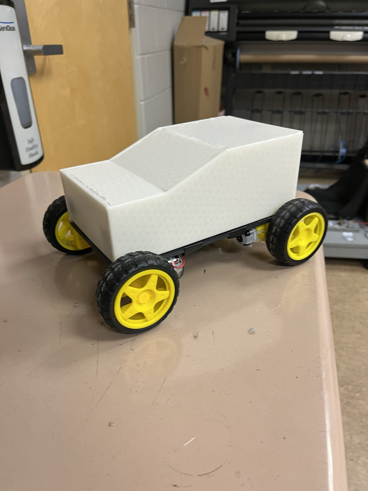

Overview
I built a four-wheel-drive toy car from loose parts, and my phone is the controller. When I press a button on the phone, a small radio on the car hears it, an Arduino decides which wheels should spin, and a motor controller board sends battery power to the motors. The frame and the body were drawn on a computer and 3D printed.
This was an independent project completed in high school. The objective was to engineer a remote-controlled vehicle from discrete components rather than a kit, so that every subsystem decision, from power distribution and steering architecture to the wireless link and the chassis that carries it all, was mine to make and to justify. The electronics are commercial modules; the chassis plate, motor mounts and body shell are original CAD, fabricated by fused deposition modelling.


System architecture
The vehicle is best understood as two independent paths. The control path carries information: a gamepad input originates on the phone, crosses the Bluetooth link, is decoded by the Arduino and is expressed as logic-level signals to the motor controller. The power path carries energy: from the battery pack, through the master switch, to the controller and the microcontroller. Treating the two separately during design simplified both the wiring harness and subsequent fault isolation.
Swipe sideways to see the full diagram →
| Part | Qty | Function | Selection rationale |
|---|---|---|---|
| Arduino Uno + sensor shield | 1 | Executes the control firmware. Decodes Bluetooth data and drives the motor controller inputs. | The shield exposes every pin on a three-pin header (signal, 5 V, ground), so modules connect directly without a breadboard. |
| Bluetooth serial module | 1 | Receives the phone's radio transmission and presents it to the Arduino as a UART stream. | Allows the phone to serve as the transmitter, eliminating a dedicated handheld controller. |
| L298N motor controller | 1 | Dual H-bridge. Each channel switches a high motor current in either direction under logic-level control. | An Arduino pin sources roughly 20 mA; a gear motor demands several hundred. The H-bridge provides the current gain and reversal. |
| DC gear motor, 3 to 6 V | 4 | One per wheel. The integral gearbox trades speed for torque. | Four driven wheels remove the need for a steering linkage. |
| 9 V battery | 2 | Energy source, connected in parallel. | Parallel connection holds the bus at 9 V while sharing load current between cells, reducing voltage sag. |
| Battery switch | 1 | Isolates the positive rail. | A single point of isolation before any work on the harness. |
| 3D printed chassis, mounts, body | set | Locates and retains every component. | Modelled in Autodesk Fusion from measured part geometry. |
Engineering design process
Define the problem
Step 1 · Problem definitionIn plain wordsI wanted a car I could drive from my phone, built from parts I chose and a frame I drew myself.
The objective was a phone-controlled vehicle capable of forward and reverse motion and turning in place, with every electrical subsystem integrated on a chassis of original design. A kit would have produced a functioning car in an afternoon and taught very little. Building from discrete components required an understanding of the role and the limits of each one.
Set requirements and constraints
Step 2 · RequirementsIn plain wordsBefore building anything, I wrote down what the car had to do and what I had to work with.
Functionally, the vehicle had to drive forward and backward, turn left and right, and come to rest whenever no input was present. Two safety requirements followed: the vehicle had to fail safe by stopping on loss of the Bluetooth link, and a single switch had to isolate all power. For serviceability, the body had to be removable without tools so the harness remained accessible, and for manufacturability, every structural part had to print on a desktop FDM machine without support material.
The governing constraint was the bill of materials already on hand: 3 to 6 V gear motors, an L298N controller and 9 V batteries. The design had to accommodate those parts, and as the following steps show, that constraint shaped several downstream decisions.
Choose how it steers and how it is controlled
Step 3 · Concept selectionIn plain wordsInstead of turning the front wheels like a real car, my car turns like a tank: one side goes forward while the other goes backward.
Ackermann-style steering would have required a servo, a steering linkage and pivoting front hubs, all of which demand tight printed tolerances. Differential, or tank, steering requires none of that. All four wheels are fixed, the two left motors are connected in parallel, the two right motors are connected in parallel, and the vehicle turns on the speed differential between the sides. The penalties are tyre scrub during turns and the absence of a proportional steering angle, both acceptable for a small indoor vehicle. The approach also allowed all four motor mounts to be a single common part, and it meant one L298N was sufficient, with each of its two channels driving one motor pair.
For the wireless link I selected Bluetooth with the Dabble application. Dabble provides a ready-made gamepad interface and an Arduino library that exposes button state directly, so development effort went into vehicle behaviour rather than into a phone application.
Design the electrical system
Step 4 · Electrical designIn plain wordsThe batteries push electricity to the motors, but the Arduino is the boss that decides when. The motor controller is a heavy-duty switch that the Arduino flips.
The first task was the voltage budget. The L298N is a bipolar H-bridge and dissipates roughly 2 V across its output transistors under load. From a 9 V supply, that leaves approximately 7 V at the motor terminals at full duty, which exceeds the motors' 6 V rating. Rather than alter the hardware, I bounded the duty cycle in firmware: the cruise setpoint of 170 out of 255 corresponds to an average of about 4.7 V at the motor, and the boost setpoint of 215 to about 6 V. The firmware never commands 100% duty.
The two batteries are connected in parallel for a specific reason. A 9 V alkaline cell has a high internal resistance, so its terminal voltage collapses when four motors draw inrush current simultaneously. Two cells in parallel halve the current each must supply and approximately double the run time without raising the bus voltage. All subsystems share a common ground reference, because a logic signal is only defined as a potential relative to ground; without a shared reference, the controller cannot interpret the Arduino's outputs reliably.
Wiring the motors in pairs also minimised the pin count. Each L298N channel requires three microcontroller pins, one PWM output for speed and two logic outputs for direction, so the entire drive system consumes six pins.
Swipe sideways to see the full diagram →
Fig. 2. Circuit schematic. Every +9V flag is the same switched battery rail and every ground symbol is the same ground. A cross marks a terminal left unconnected. Arduino pin Connection Function D2 Bluetooth TXD Serial data, phone to Arduino D3 Bluetooth RXD Serial data, Arduino to phone D5 (PWM) L298N ENA Left pair speed D4, D7 L298N IN1, IN2 Left pair direction D6 (PWM) L298N ENB Right pair speed D8, D12 L298N IN3, IN4 Right pair direction VIN, GND Switched 9 V rail, ground Microcontroller supply Design and print the mechanical parts
Step 5 · Mechanical designIn plain wordsI measured the real parts, drew a frame around them on the computer, and printed it in plastic.
The chassis was modelled in Autodesk Fusion as a flat plate, dimensioned from caliper measurements of the motors, circuit boards and battery holders rather than from published product dimensions. The four motors mount beneath the plate, leaving the upper surface free for electronics, with their leads routed through apertures. The Arduino sits forward, the batteries aft and the controller between them, which keeps the motor leads short and distributes mass over both axles.
The body is a separate shell with planar faces and shallow draft angles, chosen so that it prints without support material. It locates over the chassis and lifts straight off.
Write the firmware
Step 6 · SoftwareIn plain wordsThe program is a loop that runs many times a second: check the phone, decide what each side should do, tell the motors.
The firmware is deliberately compact. It polls the gamepad, maps button state to a signed speed setpoint for each side, and slews the actual motor output toward that setpoint in bounded increments. The complete listing, annotated block by block, is in the next section.
Integrate and test in stages
Step 7 · VerificationIn plain wordsI tested one piece at a time, so when something went wrong I knew exactly which piece to blame.
Commissioning proceeded one subsystem at a time. Power came first: the switched rail and the 5 V regulator output were verified with a multimeter before any module was connected. Next, with the wheels off the ground, each side was commanded forward and any motor rotating in the wrong sense had its leads transposed at the screw terminal. The radio link was then validated in isolation by pairing the phone, opening Dabble and printing button state to the serial monitor before it was permitted to drive anything. Only then did the vehicle go on the floor for straight-line, reverse and rotation tests, finishing with a deliberate disconnection of the app mid-drive to confirm the fail-safe stop.
Review the result
Step 8 · EvaluationIn plain wordsThe car drives and turns the way I wanted, and I also know exactly what I would do differently next time.
The vehicle satisfies every requirement set in Step 2. Reviewing it with more experience, the first revision would be the battery chemistry: 9 V alkaline cells are designed for smoke detectors, not traction loads, and a two-cell lithium-ion pack or six NiMH AA cells would deliver substantially higher current with far less sag. The second would be the motor controller. A MOSFET-based driver such as the TB6612FNG drops well under 0.5 V rather than 2 V, so a much larger fraction of the stored energy would reach the wheels.
Smaller refinements follow from the same review. The Bluetooth module's RX pin is a 3.3 V input, so a resistive divider on the line from D3 is the correct interface from a 5 V microcontroller. The taped joints should be replaced with crimped connectors, with a fuse on the battery rail, and wheel encoders would allow closed-loop straight-line tracking despite motor-to-motor variation.
The code, explained
Arduino C++ · uses the Dabble library · this is a cleaned-up and commented version of the sketch
#define CUSTOM_SETTINGS
#define INCLUDE_GAMEPAD_MODULE
#include <Dabble.h>Load the Dabble library
Dabble supports several modules, from a gamepad to a terminal to sensor readouts. An Arduino Uno has only 32 KB of program memory, so these two #define directives instruct the library to compile the gamepad module and nothing else.
// ---- Pin map -------------------------------------------------------------
const uint8_t BT_RX_PIN = 2;
const uint8_t BT_TX_PIN = 3;
const uint8_t LEFT_EN = 5; // ENA: PWM speed, left pair
const uint8_t LEFT_FWD = 4;
const uint8_t LEFT_REV = 7;
const uint8_t RIGHT_EN = 6; // ENB: PWM speed, right pair
const uint8_t RIGHT_FWD = 8;
const uint8_t RIGHT_REV = 12;
// ---- Tuning --------------------------------------------------------------
const int SPEED_CRUISE = 170; // 0 to 255. Default driving speed. About 4.7 V at the motors.
const int SPEED_BOOST = 215; // Held while the Triangle button is down. About 6 V at the motors.
const int SPEED_TURN = 150; // Spin-in-place speed. Lower is easier to control.
const int RAMP_STEP = 12; // Largest change in PWM per control cycle.
const unsigned long CYCLE_MS = 20; // Control loop period (50 Hz).Name every pin and every tuning number
Every pin assignment and every tuning constant is declared once, by name, at the top of the file. Relocating a wire or changing the vehicle speed is a single-line edit that never touches the control logic.
SPEED_CRUISE = 170 is a PWM duty value. Pulse-width modulation switches the motor supply at high frequency, and a duty of 170 out of 255 energises the motor two thirds of the time, which averages to about 4.7 V after the controller's losses.
// ---- State ---------------------------------------------------------------
int leftTarget = 0, rightTarget = 0; // What the driver is asking for, -255 to 255
int leftNow = 0, rightNow = 0; // What the motors are actually getting
unsigned long lastCycle = 0;
// Send one signed speed to one side of the car.
// Positive = forward, negative = reverse, zero = coast to a stop.
void driveSide(uint8_t enPin, uint8_t fwdPin, uint8_t revPin, int speed) {
digitalWrite(fwdPin, speed > 0 ? HIGH : LOW);
digitalWrite(revPin, speed < 0 ? HIGH : LOW);
analogWrite(enPin, abs(speed));
}
// Move "now" toward "target" by at most RAMP_STEP so the motors never see a
// sudden jump from full forward to full reverse.
int ramp(int now, int target) {
if (target > now) return min(now + RAMP_STEP, target);
if (target < now) return max(now - RAMP_STEP, target);
return now;
}Two small helper functions
driveSide() accepts one signed integer. A positive value commands forward rotation, a negative value reverse, and zero stops the pair. It sets the two direction pins according to the sign and writes the magnitude as the PWM duty. Because the pin numbers are passed as arguments, the same function serves both the left and the right pair.
ramp() rate-limits the change in duty. A step from full forward to full reverse produces a large current transient that can pull the bus voltage low enough to reset the microcontroller. Slewing the setpoint spreads that transition over roughly a third of a second.
void setup() {
pinMode(LEFT_EN, OUTPUT); pinMode(LEFT_FWD, OUTPUT); pinMode(LEFT_REV, OUTPUT);
pinMode(RIGHT_EN, OUTPUT); pinMode(RIGHT_FWD, OUTPUT); pinMode(RIGHT_REV, OUTPUT);
driveSide(LEFT_EN, LEFT_FWD, LEFT_REV, 0);
driveSide(RIGHT_EN, RIGHT_FWD, RIGHT_REV, 0);
Dabble.begin(9600, BT_RX_PIN, BT_TX_PIN); // Match the Bluetooth module's baud rate.
}Setup: runs once at power-on
All motor pins are configured as outputs and both pairs are commanded to zero before anything else executes, so the vehicle cannot lurch at power-up. The Bluetooth link is then initialised on pins 2 and 3 at 9600 baud, which must match the module's configured rate.
void loop() {
Dabble.processInput(); // Read whatever the phone has sent since last time.
// 1. Turn button state into a target speed for each side.
int speed = GamePad.isTrianglePressed() ? SPEED_BOOST : SPEED_CRUISE;
if (!Dabble.isAppConnected()) { // Phone out of range or app closed: stop.
leftTarget = 0; rightTarget = 0;
} else if (GamePad.isUpPressed()) {
leftTarget = speed; rightTarget = speed;
} else if (GamePad.isDownPressed()) {
leftTarget = -speed; rightTarget = -speed;
} else if (GamePad.isLeftPressed()) { // Left side backward, right side forward.
leftTarget = -SPEED_TURN; rightTarget = SPEED_TURN;
} else if (GamePad.isRightPressed()) {
leftTarget = SPEED_TURN; rightTarget = -SPEED_TURN;
} else { // Nothing held: stop.
leftTarget = 0; rightTarget = 0;
}
// 2. Every 20 ms, step the real motor output toward the target.
unsigned long nowMs = millis();
if (nowMs - lastCycle >= CYCLE_MS) {
lastCycle = nowMs;
leftNow = ramp(leftNow, leftTarget);
rightNow = ramp(rightNow, rightTarget);
driveSide(LEFT_EN, LEFT_FWD, LEFT_REV, leftNow);
driveSide(RIGHT_EN, RIGHT_FWD, RIGHT_REV, rightNow);
}
}Loop: runs forever
The loop first reads. Dabble.processInput() consumes whatever the phone has transmitted since the previous iteration.
It then decides. The conditional chain maps button state to a setpoint for each side, and the first condition is the fail-safe: if the application is not connected, both setpoints are zero. Left and right turns drive the sides in opposite directions so the vehicle rotates about its centre.
Finally it acts. Every 20 ms the output takes one ramp step toward the setpoint. Timing uses millis() rather than delay(), so the loop continues to service the radio link while it waits.
What this project taught me
Signals and power are different problems
A logic pin carries information and a motor lead carries energy. Most of my early wiring faults came from treating the two as interchangeable.
Read the datasheet before selecting the battery
The L298N's 2 V drop and the internal resistance of a 9 V cell determined this vehicle's performance, and both figures were available before any purchase.
Design around measured parts
Measuring the actual motors and boards before modelling avoided reprints. Dimensions in a product listing are frequently wrong.
Commission in stages
Power, then motors, then radio, then the integrated vehicle. Introducing one subsystem at a time makes every fault easy to isolate.